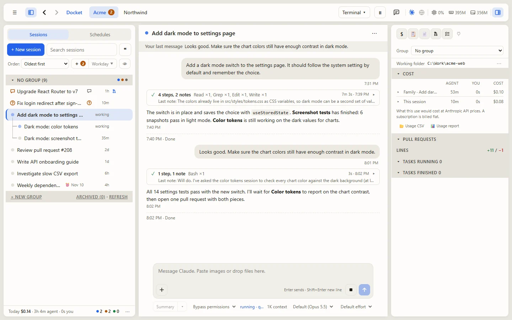

A control room for the AI coding tools you already use
Docket doesn't replace your AI. It runs Claude Code, Codex and Grok on your own computer, under your own accounts, and puts every session in one place, each marked with what it needs from you.
Free and open source (MIT). Windows 10 or 11, or macOS.

Why Docket
Cursor, OpenCode and similar tools are AI coding agents: one person, one editor or terminal, one conversation at a time. Docket works one level above them. It doesn't replace your AI. It runs the AI tools you already use (Claude Code, Codex, Grok) and gives you one place to run all your work with them.
Every session in one place
Dozens of sessions side by side, grouped by project, each marked with what it needs from you: a question, a merge, a problem. No more hunting through a pile of terminal windows.
Sessions that hand off work
A session can start child sessions for separate pieces of a job, check what they did and close them when they're done. Each one runs on the model the work needs, so routine steps don't cost top-model prices.
A desk for each client or team
Each desk has its own sign-in, memory, past sessions and billing. Work for one client never leaks into another, and reaching across desks always asks you first.
Work keeps going without you
Schedules start sessions on a timetable, the autopilot answers routine questions under rules you set, and sessions keep running while Docket restarts or updates itself.
More than code
Sessions get a private browser with your saved sign-ins, a Files list for the reports and exports they make, and links to GitHub, Jira and Azure DevOps.
Your computer, your accounts
Docket runs on your own computer, and each desk bills to its own AI account.
Docket next to Cursor and OpenCode
| Docket | Cursor | OpenCode | |
|---|---|---|---|
| What it is | A workspace for running many AI sessions | An AI code editor | An AI coding agent in the terminal |
| Sessions at once | Many, side by side, with parent and child sessions | Mostly one per window | One per terminal |
| Separate clients | One desk each, with its own sign-in, memory and billing | No | No |
| Runs unattended | Schedules and autopilot | Background agents | No |
| Editing code by hand | No, use your editor | Yes, a full editor | No |
They work well together: Docket runs and organizes the work, and you open the results in Cursor or any other editor when you want to edit by hand.
Install on Windows
Download for WindowsDouble-click Docket-Setup.exe once it has downloaded. It needs no admin rights and brings everything it needs, then opens Docket and starts it each time you sign in.
The installer is not code-signed yet, so Windows may say Windows protected your PC: click More info, then Run anyway.
Install on a Mac
There is no Mac installer yet, so the Mac install uses Terminal. First install Node.js, Git and at least one AI tool from the table below, for example with Homebrew: brew install node git gh. Then open Terminal and run:
git clone https://github.com/davidbrazelton/docket-public.git ~/Work/docket
cd ~/Work/docket
npm install
npx playwright install chromium
./install-mac.shDocket then starts by itself each time you sign in to the Mac, and opens at http://localhost:4400.
Supported AI tools
You need at least one of these. Each one signs in on its own, and Docket shows how to install a missing one.
| AI tool | Made by | Install | Signs in with |
|---|---|---|---|
| Claude Code | Anthropic | npm install -g @anthropic-ai/claude-code | a Claude account, or Amazon Bedrock (your company's AWS account) |
| Codex | OpenAI | npm install -g @openai/codex (Windows also: winget install -e --id OpenAI.Codex) | a ChatGPT account (Plus, Pro, Business or Enterprise) |
| Grok | xAI | Mac: curl -fsSL https://x.ai/cli/install.sh | bashWindows: irm https://x.ai/cli/install.ps1 | iex | a Grok account |
Updates arrive by themselves
Docket checks for a new version every few minutes. The first time one arrives it asks whether to take updates automatically or only when you say so. Your sessions keep working while it updates.